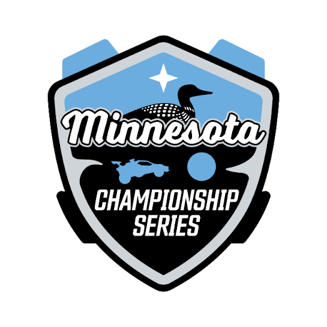

<style>

#pause-mncs {
    position: absolute;
    left: 50%;
    top: 50%;
    opacity: .2;
    transform: translate(-50%, -50%);
    animation: pause-logo 5s infinite ease-in-out;
}
#pause-scene {
    transition: background 2s ease;
    animation: 120s pause-scroll infinite linear;
    background: url("./img/hexagon.svg"), 
        linear-gradient(0deg, rgb(0, 0, 0) 0%, rgb(48, 98, 136) 20%, rgb(2 75 132 / 62%) 50%, rgb(10 131 224 / 40%) 90%, rgb(148, 209, 255, 0.6) 100%, #ffffff 100%)
}
@keyframes pause-scroll {
    100% {background-position: 5000px 0px;}
}
@keyframes pause-logo {
    0% { margin-top: 2%; }
    50% { margin-top: -2%; }
    100% { margin-top: 2%; }
}
</style>

<!-- This scene must be shown manually -->
<rl-scene hidden name="PAUSE" id="pause-scene" class="overlay" style="display: flex;justify-content: center;align-items: center;flex-direction: column;z-index:8;background-color:white;">
    <p class="montserrat-bold" style="margin-bottom:10px;font-size:110px;z-index:9;font-weight:700;">Technical Difficulties</p>
    <p class="montserrat-bold" style="font-size:36px;z-index: 9;margin-top:0px;font-weight:400;">Jelp did an oopsie.</p>
    
</rl-scene>